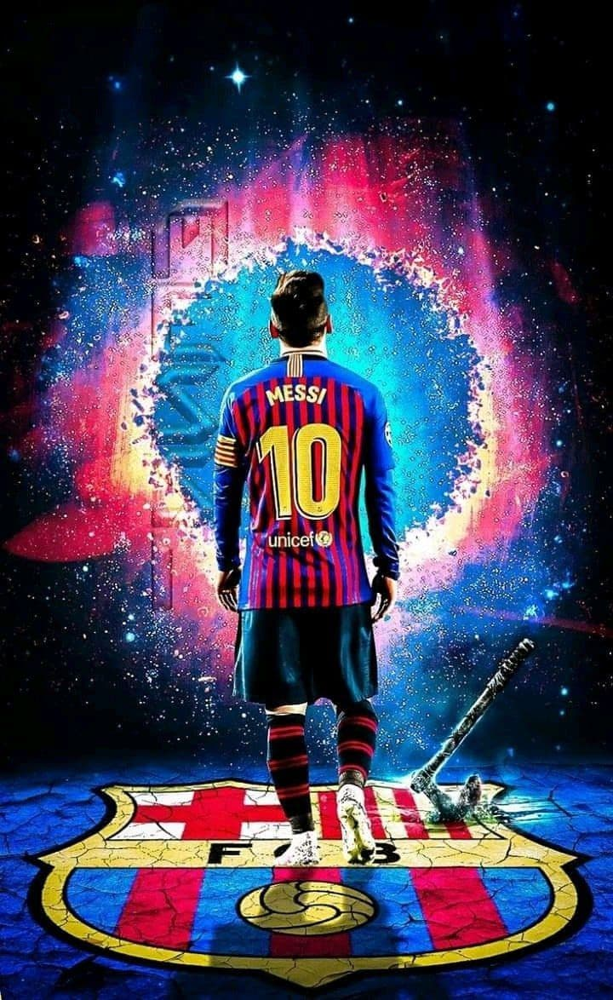

LIONEL MESSI

Lionel Messi is an Argentinian footballer widely regarded as one of the greatest players of the modern generation. He plays for FC Barcelona and the Argentina national team. He has won FIFA world player of the year four times (a record already). He has often been described as Diego Maradona’s successor because of his prolific goal scoring record and ability to dribble past opponents.
“I have seen the player who will inherit my place in Argentine football and his name is Messi. Messi is a genius, and he can become an even better player.”
His potential is limitless, and I think he’s got everything it takes to become Argentina’s greatest player.”
– Diego Maradona
SHORT BIOGRAPH
Lionel Messi was born, 24 June 1987, in Rosario, Argentina to a working-class family. His father was a factory steel worker, and his mother a cleaner.
He began playing from an early age, and his talent was soon apparent. However, at the age of 11, Messi was diagnosed with growth hormone deficiency (GHD). This was a condition that stunted growth and required expensive medical treatment, including the use of the drug Human growth hormone.
His local club, River Plate were interested in signing Messi but didn’t want to pay for his medical treatment. However, Messi was given a trial with Barcelona, and coach Carles Rexach was impressed – offering Messi a contract (written on a paper napkin!) which included paying for Messi’s treatment in Spain. Messi moved to Barcelona with his father and became part of the prestigious FC Barcelona youth academy.
HIS SUCCESS
- The Best FIFA Men's Player
2019 FC Barcelona
- 6X WINNER BALLON D'OR
- 3X UEFA BEST PLAYER IN EUROPE
- 19X TOP SCORE
- 10X PLAYER OF THE YEAR
- 10X SPANISH CHAMPION
- 6X SPANISH CUP WINNER
- 8X SPANISH SUPER CUP WINNER
- 3X FIFA CLUB WORLD CUP WINNER
- 1X UNDER-20 WORLD CUP CHAMPION
- 3X UEFA SUPERCUP WINNER
- 1X OLYMPIC MEDALIST